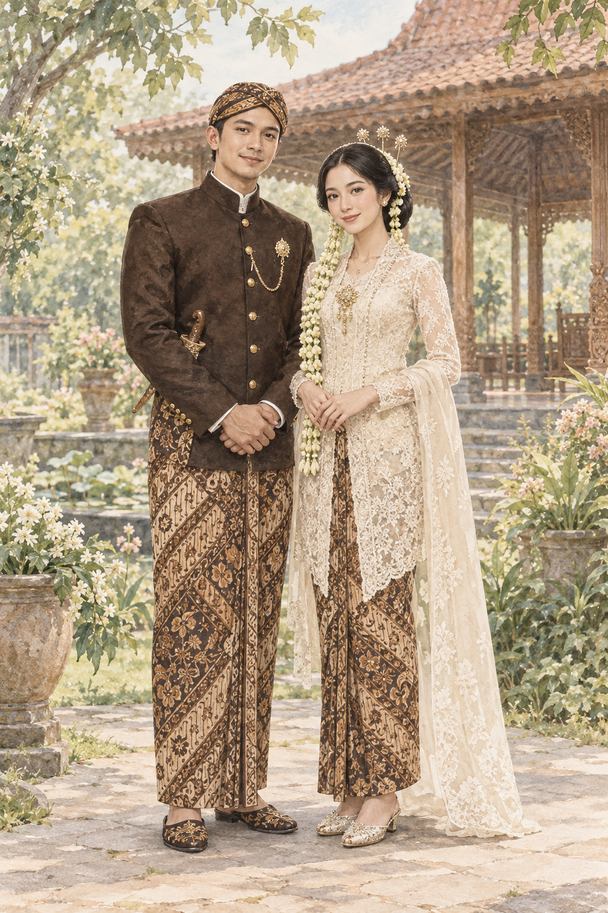
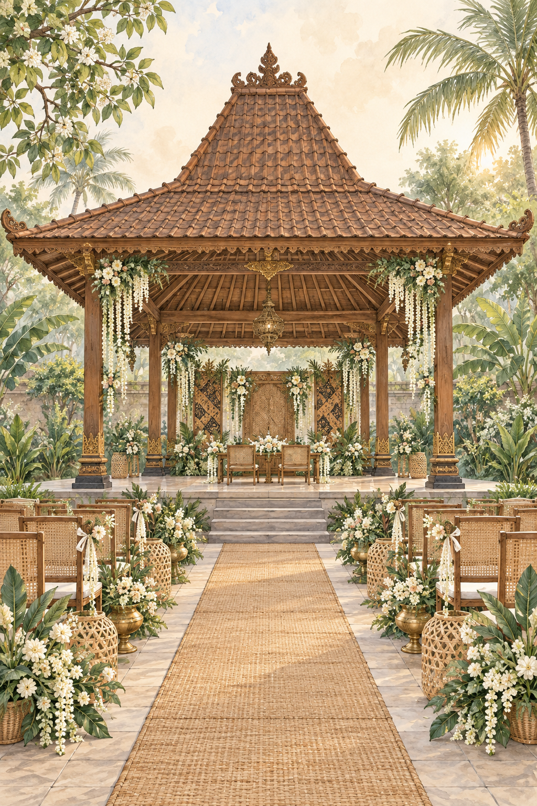
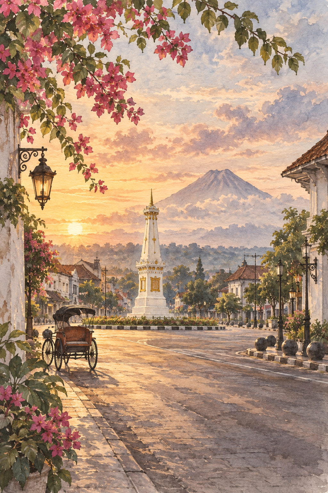

Kirana Ayuningtyas
Bapak Hadi Santoso
& Ibu Retno Wulandari
DAPRITA · WEDDING INVITATION
Pawiwahan
PAWIWAHAN · 08 AGUSTUS 2027
Dengan penuh syukur, kami mengundang Bapak/Ibu/Saudara/i untuk menjadi bagian dari awal perjalanan kami.
Lihat undangan ↓“Tresna iku tuwuh saka ati, ngrembaka kanthi pangestu.”
Cinta tumbuh dari hati dan berkembang bersama restu.

Bapak Hadi Santoso
& Ibu Retno Wulandari
Bapak Bambang Pramudya
& Ibu Sekar Lestari
MENUJU HARI BAHAGIA

Pendopo Sekar Arum
Sleman, Yogyakarta
Pendopo Sekar Arum
Sleman, Yogyakarta

CRITA KATRESNAN
Di antara kesibukan Yogyakarta, sapaan sederhana membawa kami pada cerita yang baru.
Waktu mengajarkan kami untuk mendengar, memahami, dan saling menjaga.
Dengan restu keluarga, kami mantap melangkah bersama dalam ikatan pernikahan.
KONFIRMASI KEHADIRAN
Mohon konfirmasi kehadiran sebelum 01 Agustus 2027.
TANDA KASIH
Kehadiran dan doa restu Anda merupakan hadiah terindah. Tanda kasih dapat disampaikan melalui: